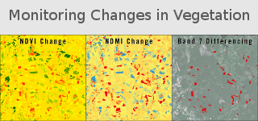
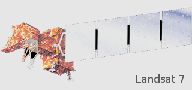
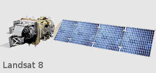
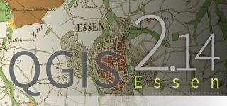
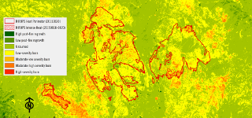

Welcome
Hi, my name is David G. Jones and this is my Geospatial sandbox!
Right now, this website is acting as my
Master of Geospatial Information Science and Technology (MGIST) Portfolio.
Highlights from my MGIST journey at North Carolina
State University can be found herein, along with some additional content
from work and independent study. Please don't hesitate to drop me a note
about content on the site, constructive feedback or simply to reach out
and connect with another Geospatial explorer!
Portfolio at a Glance
Spatial data, analysis, and technology.




